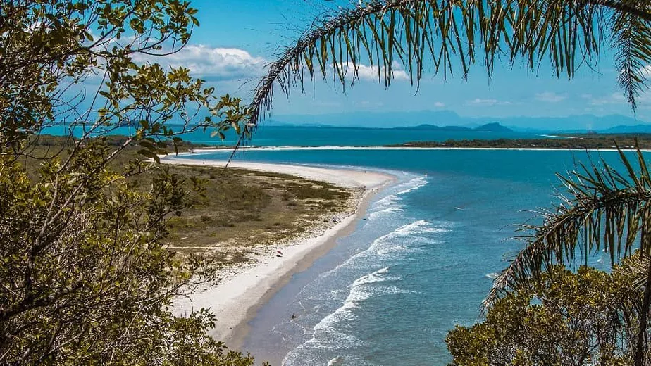

Muito além das praias, o litoral do Paraná esconde mistérios coloniais, lendas piratas e uma das áreas de Mata Atlântica mais preservadas do Brasil.

Litoral Paranaense: Quatro Séculos de História e Colonização
O litoral do Paraná nasceu em 1640 na Ilha da Cotinga e consolidou-se em Paranaguá (1648) com Gabriel de Lara na busca pelo ouro. Isolada pela Serra do Mar, a região misturou heranças indígenas, portuguesas e africanas, originando a cultura caiçara e o tradicional Fandango Caiçara.Nos séculos XVIII e XIX, o comércio da erva-mate impulsionou cidades como Morretes e Antonina, culminando na inauguração da Estrada de Ferro em 1885, obra-prima dos engenheiros negros Antônio e André Rebouças. Essa riqueza histórica, portuária e da Mata Atlântica inspirou artistas como Alfredo Andersen e Íria Correia, que imortalizaram a identidade paranaense em suas telas.

O Coração Cultural do Paraná: Onde a Arte e a Tradição se Encontram
O litoral do Paraná é o pilar fundamental da cultura do estado. O antigo isolamento pela Serra do Mar preservou a identidade caiçara e o Fandango Caiçara, ritmo tradicional batido com tamancos de madeira e reconhecido pelo IPHAN como Patrimônio Cultural Imaterial do Brasil. A região também gerou o prato típico Barreado e inspirou os pioneiros das artes visuais do estado, como Íria Correia e o mestre norueguês Alfredo Andersen, conREADME

Curiosidades
Curiosidade 1
O litoral do Paraná possui uma das menores extensões litorâneas do Brasil, com apenas cerca de 100 km de costa oceânica. Apesar de pequeno em tamanho, o território abriga uma biodiversidade e riqueza cultural impressionantes
curiosidade 2
O litoral do Paraná guarda o segredo da primeira comunidade de surf do Brasil a se organizar fora do eixo Rio-São Paulo, impulsionada pelas famosas ondas da Praia de Gaivotas e de Matinhos.